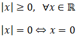
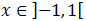
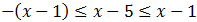
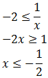

Valor Absoluto e Inecuaciones |
Contenido de esta página:
-
Introducción: concepto y ejemplos
-
Definición (matemática) del valor absoluto como función
Propiedades básicas del valor absoluto
-
Resolución de 13 Inecuaciones con Valor Absoluto (inecuaciones de primer grado)
Introducción
El valor absoluto de un número a,
representado como |a|, es su valor numérico (con signo positivo).
Por ejemplo,
Notemos que:
si el número es positivo, su valor absoluto es el propio número;
si el número es negativo, su valor absoluto es su opuesto (número con signo opuesto, es decir, con
signo positivo);
si el número es 0, su valor absoluto es 0, aunque 0 no es ni positivo ni negativo.
Definición de la función Valor Absoluto
Ver Definición
Matemáticamente, el valor absoluto es una función (de una variable)
de los reales en los reales:
y se define como una función a trozos:
Esta función es continua en los reales y derivable en
La gráfica de la función es:
Notemos que en los reales negativos la gráfica es la de y = - x y en los positivos es la de
y = x.
Propiedades del Valor Absoluto
Ver Propiedades
El valor absoluto siempre es mayor o igual que 0, siendo 0 sólo cuando su argumento es 0:

El valor absoluto de un producto es el
producto de los valores absolutos de los factores:
Valor absoluto de la suma:

Propiedad importante: si tenemos la desigualdad (menor o igual)
podemos escribir
que es lo mismo que decir
(tienen que cumplirse ambas relaciones).
Dicho en forma de intervalos:
Si la desigualdad es (mayor o igual)
podemos escribir
(es una unión: tiene que cumplirse una de las dos).
Dicho en forma de intervalos:
Inecuaciones Resueltas
Antes de empezar, diremos que en todos los problemas usaremos
la cuarta propiedad del apartado "Propiedades del Valor Absoluto".
Inecuación 1
Ver solución
Escribimos la inecuación como

Por tanto, la solución es
Inecuación 2

Ver solución
Escribimos la inecuación como
Por tanto, la solución es

O bien, con la notación de paréntesis,
En cualquier caso, los extremos del intervalo son abiertos
(porque la desigualdad es estricta).
Inecuación 3
Ver solución
Esta inecuación no tiene solución ya que el
valor absoluto de un número siempre mayor o igual que 0.
Inecuación 4
Ver solución
La solución es todos los reales:
ya que el valor absoluto siempre es mayor o igual que 0.
Inecuación 5
Ver solución
Inecuación 6
Ver solución
Podemos escribir la inecuación como

Tenemos que resolver las dos inecuaciones.
Podemos hacerlo al mismo tiempo:
Sumamos 1:
O bien, separar ambas inecuaciones y resolverlas por separado:
De ambas formas obtenemos la misma solución:
Inecuación 7
Ver solución
Tenemos las dos inecuaciones:
Las resolvemos:
Por tanto, la solución es
Inecuación 8
Ver solución
Escribimos la inecuacón como
Por tanto,
Resolvemos cada inecuación:
Por un lado:
Por otro lado:
Luego la solución es
Inecuación 9
Ver solución
Escribimos la inecuación como
Por un lado:
Tenemos que estar alerta en el último paso
ya que el coeficiente de la incógnita es negativo.
Al dividir por -3 tenemos que cambiar el signo
de la inecuación:
Por otro lado:
Por tanto, la solución es
Inecuación 10
Ver solución
Debe cumplirse alguna de los dos inecuaciones:
Resolvemos la primera:
Resolvemos la segunda:
Por tanto, la solución es:

Inecuación 11
Ver solución
Escribimos la inecuación como:

Vamos a trabajar primero con las dos inecuaciones al mismo tiempo:
Sumamos 5:
Sumamos x:
Ahora tenemos que separarlas para obtener la solución:
Por un lado:

Por otro:
En esta segunda inecuación hemos obtenido una relación que siempre se cumple.
Luego no nos aporta restricciones a la solución.
Por tanto, la solución es
Inecuación 12: dificultad alta
Ver solución
Tenemos las dos inecuaciones:
Resolvemos la primera:
No podemos multiplicar por x porque no sabemos si es
positiva o negativa.
Supongamos que x es positiva ( x > 0): ahora sí podemos
multiplicar por x :
Por tanto, cambiando la desigualdad al dividir por el negativo -2, tenemos
Pero hemos dicho que x > 0, luego al unir ambas condiciones
tenemos que
(ya que es la más restrictiva).
Supongamos ahora que x es negativa: x < 0:

Por tanto, la solución a esta primera inecuación es
Resolvemos la segunda inecuación procediendo del mismo modo:
Si x es positiva:
Si x es negativa:
Por tanto, la solución a la segunda inecuación es:
Las soluciones de las dos inecuaciones son:
Y tienen que cumplirse ambas.
Por tanto, la solución es

Inecuación 13: dificultad muy alta
Ver solución
Tenemos las dos inecuaciones:

Resolvemos la primera:
Ahora no podemos multiplicar la inecuación por x porque
ésta podría ser negativa y, entonces, habría que cambiar
el signo de desigualdad.
Supongamos que x es positiva. Ahora podemos multiplicar:
Como el coeficiente de la x es negativo,
cambiamos el signo de desigualdad al dividir por -6:
Pero, además, sabemos que x tiene que ser positiva:
Por tanto, tenemos que ha de ser
Ahora suponemos que x es negativa.
Al multiplicar por x tenemos que cambiar el signo de desigualdad:
Por tanto,
Luego
Resolvemos la segunda inecuación procediendo de forma similar:
Si x es positiva:
Lo cual es falso. Por tanto, x no puede ser positiva.
Si x es negativa:
Lo cual siempre se cumple (no aporta restricciones a la solución).
Las soluciones que hemos obtenido son, de la primera inecuación
Y de la segunda: que x no puede ser positiva.
Por tanto, como deben cumplirse ambas inecuaciones, la solución es